Les molécules à connaître
RS : « faites des fiches : d'un côté le dessin de la molécule, de l'autre le nom et ce que vous savez pour cette molécule ». Trois modes : tout voir ; Reconnaître (la structure est visible, le nom est flouté : touchez la carte pour vérifier) ; Dessiner (le nom est visible, la structure est cachée : dessinez-la sur papier, puis touchez la carte).
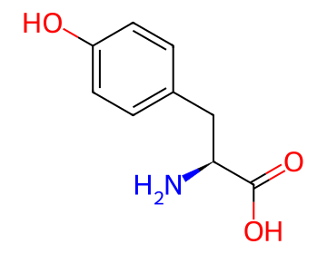
L-Tyrosine
Catécholamines
Acide aminé de départ. Tyrosine hydroxylase (étape limitante) → L-DOPA.
Voir dans le cours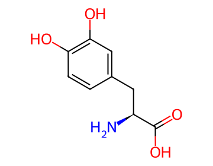
L-DOPA
Catécholamines
Tyrosine + OH en 3 (noyau catéchol). DOPA décarboxylase → dopamine. Médicament de Parkinson (passe la BHE, pas la dopamine).
Voir dans le cours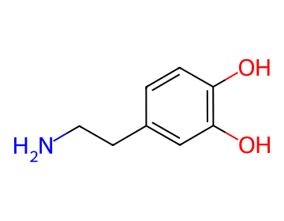
Dopamine
Catécholamines
L-DOPA décarboxylée. Neuromédiateur (mouvement, récompense) ; dopamine β-hydroxylase → noradrénaline.
Voir dans le cours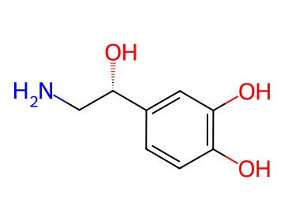
Noradrénaline
Catécholamines
Dopamine + OH sur le carbone β (DBH). Neuromédiateur du sympathique. PNMT (cortisol) → adrénaline.
Voir dans le cours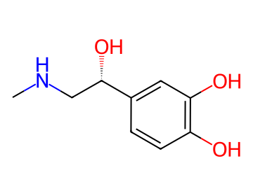
Adrénaline
Catécholamines
Noradrénaline N-méthylée (PNMT, médullosurrénale). Hormone du stress : hyperglycémiante (glycogénolyse, lipolyse).
Voir dans le cours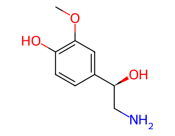
Normétanéphrine
Catécholamines
Noradrénaline méthylée sur le 3-OH par la COMT. Dosée dans le phéochromocytome.
Voir dans le cours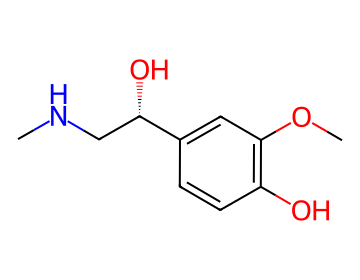
Métanéphrine
Catécholamines
Adrénaline méthylée en 3 par la COMT. Dosée dans le phéochromocytome.
Voir dans le cours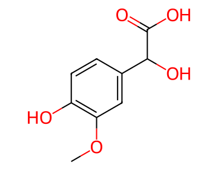
Acide vanillylmandélique (VMA)
Catécholamines
Produit final COMT + MAO de l'adrénaline et de la noradrénaline, éliminé dans l'urine.
Voir dans le cours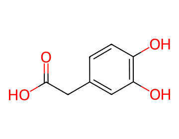
DOPAC
Catécholamines
Acide 3,4-dihydroxyphénylacétique : dopamine désaminée par la MAO.
Voir dans le cours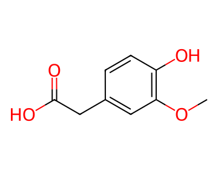
Acide homovanillique (HVA)
Catécholamines
Produit final de la dopamine (MAO + COMT), éliminé dans l'urine.
Voir dans le cours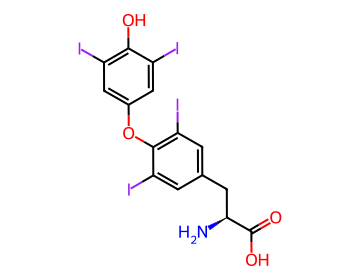
Thyroxine (T4)
Hormones thyroïdiennes
2 tyrosines couplées, 4 iodes. Forme majoritaire sécrétée, peu active : désiodée en T3.
Voir dans le cours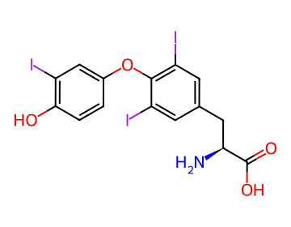
Triiodothyronine (T3)
Hormones thyroïdiennes
3 iodes (un iode en moins sur le cycle externe). Forme active, récepteur nucléaire.
Voir dans le cours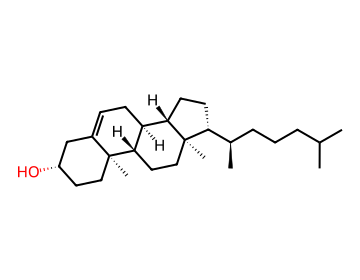
Cholestérol
Stéroïdes
27 C, 4 cycles (A-B-C-D), 3β-OH, double liaison 5-6, chaîne latérale en 17. Précurseur de toutes les hormones stéroïdes ; 90 % fait par le foie.
Voir dans le cours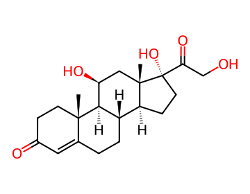
Cortisol
Stéroïdes
Glucocorticoïde (21 C) : 3-céto-Δ4, 11β-OH, 17α-OH, 21-OH. Hyperglycémiant, anti-inflammatoire, hormone du stress.
Voir dans le cours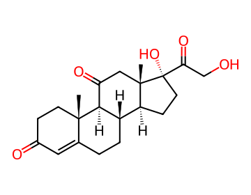
Cortisone
Stéroïdes
Cortisol avec une cétone en 11 au lieu du 11β-OH : forme inactive (11β-HSD2), réactivée par la 11β-HSD1.
Voir dans le cours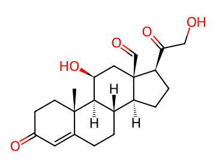
Aldostérone
Stéroïdes
Minéralocorticoïde : aldéhyde en 18 (C=O). Réabsorption de Na⁺ et d'eau, excrétion de K⁺ ; sous angiotensine II.
Voir dans le cours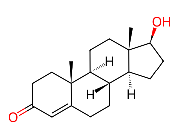
Testostérone
Stéroïdes
Androgène (19 C) : 3-céto-Δ4, 17β-OH. Aromatase → estradiol ; 5α-réductase → DHT.
Voir dans le cours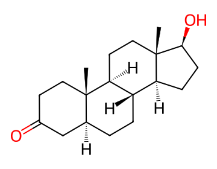
Dihydrotestostérone (DHT)
Stéroïdes
Testostérone réduite (plus de double liaison 4-5) par la 5α-réductase : androgène le plus puissant (prostate, peau, follicule pileux).
Voir dans le cours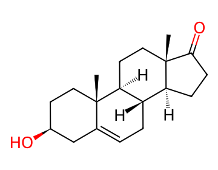
DHEA
Stéroïdes
Déhydroépiandrostérone : 3β-OH, Δ5, cétone en 17. Androgène faible de la surrénale, précurseur.
Voir dans le cours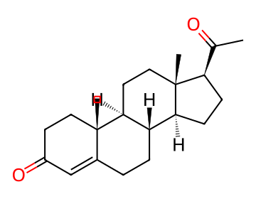
Progestérone
Stéroïdes
21 C : 3-céto-Δ4, méthylcétone (acétyle) en 17. Hormone du corps jaune, maintient la grossesse ; précurseur des corticoïdes.
Voir dans le cours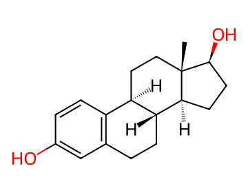
Estradiol
Stéroïdes
18 C, cycle A aromatique (phénol en 3), 17β-OH. Œstrogène le plus actif (femme en âge de procréer).
Voir dans le cours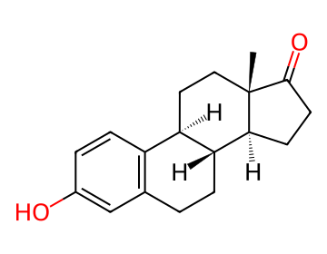
Estrone
Stéroïdes
Cycle A aromatique, cétone en 17. Œstrogène principal après la ménopause (tissu adipeux).
Voir dans le cours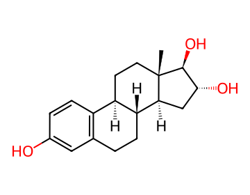
Estriol
Stéroïdes
3 OH (3, 16α, 17β). Œstrogène de la grossesse (placenta).
Voir dans le cours7-Déhydrocholestérol
Vitamine D
Cholestérol avec une 2e double liaison (7-8) dans la peau. Les UVB ouvrent le cycle B → prévitamine D3.
Voir dans le cours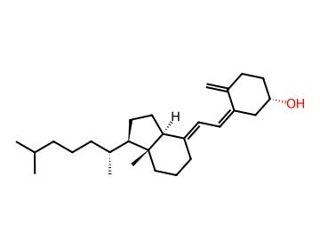
Cholécalciférol (vitamine D3)
Vitamine D
Sécostéroïde : cycle B ouvert. Inactif : hydroxylé dans le foie puis le rein.
Voir dans le cours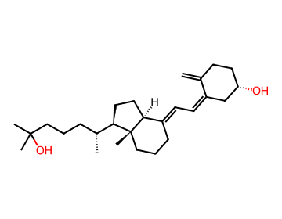
25-Hydroxycholécalciférol (calcifédiol)
Vitamine D
OH en 25 ajouté dans le foie. Forme de réserve, dosée dans le sang.
Voir dans le cours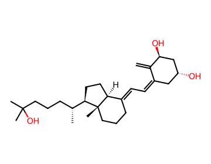
1,25-Dihydroxycholécalciférol (calcitriol)
Vitamine D
OH en 1α ajouté dans le rein (sous PTH). Forme active : absorption intestinale du Ca²⁺ et du phosphate.
Voir dans le cours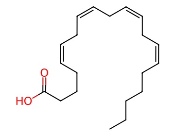
Acide arachidonique
Médiateurs
Acide gras 20:4 ω-6 libéré des phospholipides par la PLA2 → prostaglandines, thromboxanes (COX), leucotriènes (LOX).
Voir dans le cours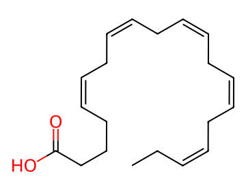
EPA
Médiateurs
Acide eicosapentaénoïque 20:5 ω-3 (poissons gras) : eicosanoïdes moins inflammatoires et moins pro-agrégants.
Voir dans le cours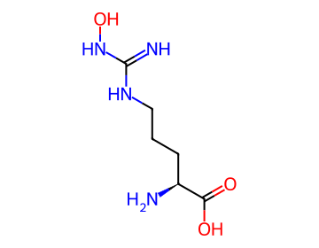
N-Hydroxy-L-arginine
Médiateurs
Intermédiaire de la NOS : OH sur un azote de la guanidine.
Voir dans le cours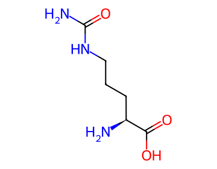
L-Citrulline
Médiateurs
Coproduit du NO (urée à la place de la guanidine). NO → guanylate cyclase → GMPc → vasodilatation.
Voir dans le cours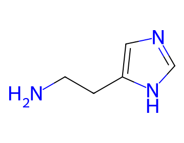
Histamine
Médiateurs
Histidine décarboxylée ; noyau imidazole. Mastocytes : allergie (H1), acidité gastrique (H2).
Voir dans le cours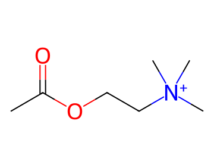
Acétylcholine
Neuromédiateurs
Choline + acétyl-CoA (ChAT) ; ester + ammonium quaternaire. Dégradée par l'acétylcholinestérase. Récepteurs nicotiniques et muscariniques.
Voir dans le cours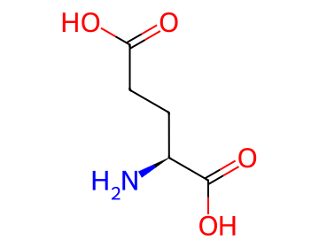
Glutamate
Neuromédiateurs
Principal neuromédiateur excitateur du SNC (NMDA, AMPA). Décarboxylé → GABA.
Voir dans le cours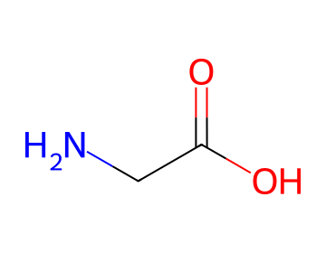
Glycine
Neuromédiateurs
Le plus petit acide aminé : neuromédiateur inhibiteur de la moelle épinière (canal Cl⁻).
Voir dans le cours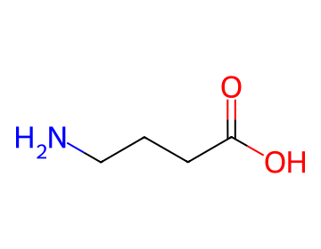
GABA
Neuromédiateurs
Acide γ-aminobutyrique (glutamate décarboxylase, vitamine B6). Principal inhibiteur du SNC ; GABA-A = canal Cl⁻ (benzodiazépines, alcool).
Voir dans le cours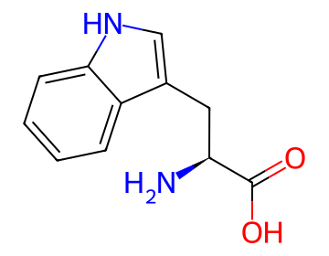
L-Tryptophane
Neuromédiateurs
Acide aminé essentiel à noyau indole : précurseur de la sérotonine et de la mélatonine.
Voir dans le cours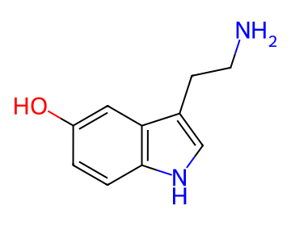
Sérotonine
Neuromédiateurs
5-hydroxytryptamine : Trp hydroxylé en 5 puis décarboxylé. Humeur, sommeil, intestin ; dégradée par la MAO.
Voir dans le cours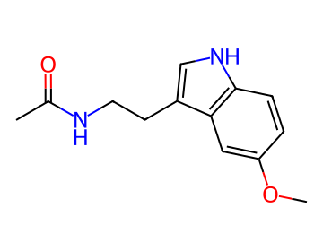
Mélatonine
Neuromédiateurs
Sérotonine N-acétylée et O-méthylée (glande pinéale, la nuit) : rythme circadien.
Voir dans le cours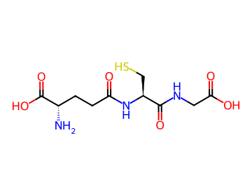
Glutathion (GSH)
Le sang
γ-Glu-Cys-Gly : liaison γ atypique, thiol réducteur. Protège le GR du stress oxydatif ; régénéré par le NADPH (G6PD).
Voir dans le cours
Hème
Le sang
Porphyrine (4 pyrroles, ponts méthène) + Fe²⁺ central ; 4 méthyles, 2 vinyles, 2 propionates. 6 liaisons du fer : 4 N, histidine, O₂.
Voir dans le cours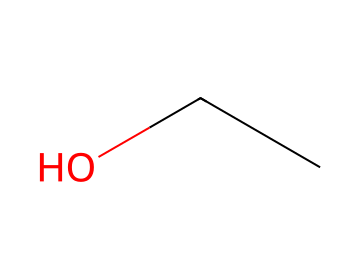
Éthanol
Le foie
ADH (NAD⁺) → acétaldéhyde ; MEOS (P450) chez le buveur régulier. Cinétique d'ordre 0.
Voir dans le cours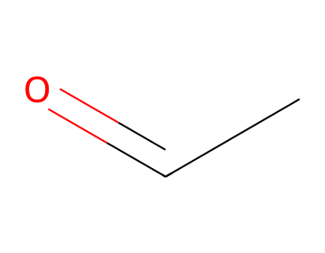
Acétaldéhyde (éthanal)
Le foie
Toxique (rougeur, nausées, maux de tête). ALDH → acide acétique ; bloquée par le disulfirame (effet antabuse).
Voir dans le cours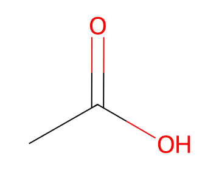
Acide acétique
Le foie
Acétate → acétyl-CoA (acétate thiokinase) → Krebs ou synthèse d'acides gras (stéatose).
Voir dans le cours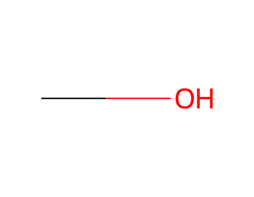
Méthanol
Le foie
Alcool frelaté (tête de distillation). ADH → formol → acide formique : acidose, cécité. Antidote : fomépizole ou éthanol.
Voir dans le cours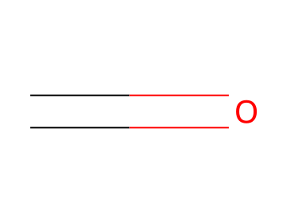
Formol (formaldéhyde)
Le foie
Métabolite intermédiaire toxique du méthanol.
Voir dans le cours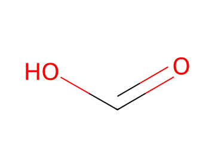
Acide formique
Le foie
Métabolite final du méthanol : acidose métabolique et atteinte du nerf optique.
Voir dans le cours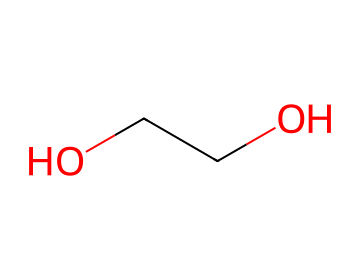
Éthylène glycol
Le foie
Antigel au goût sucré. ADH → glycolaldéhyde → acide glycolique → glyoxylique → acide oxalique.
Voir dans le cours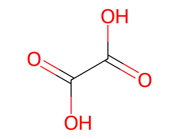
Acide oxalique
Le foie
Précipite en cristaux d'oxalate de calcium : insuffisance rénale.
Voir dans le cours